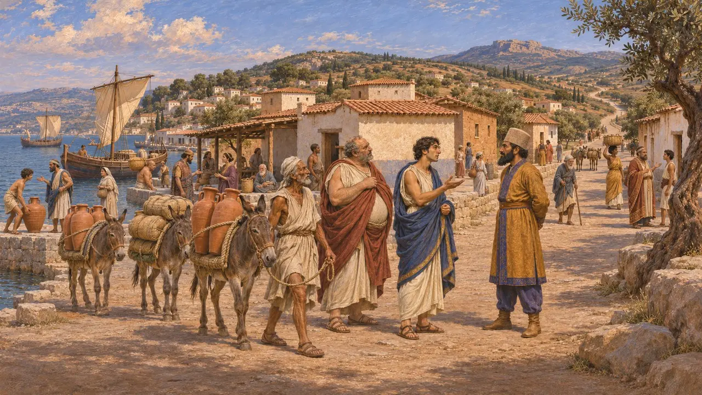
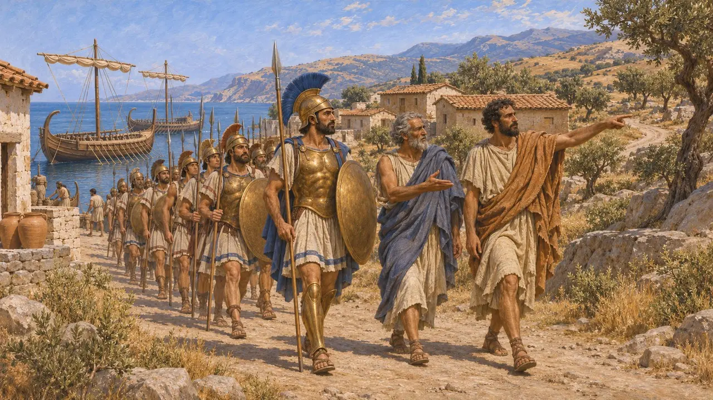
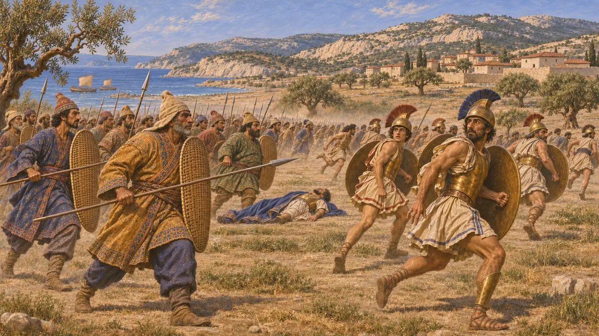
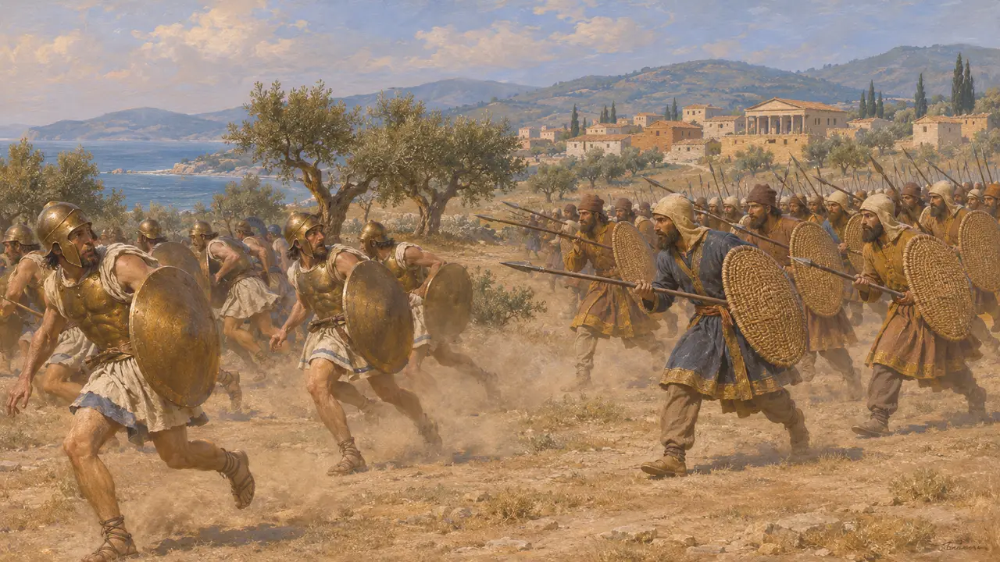
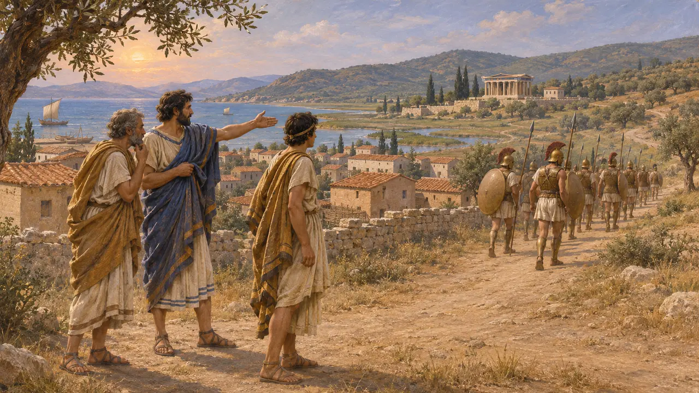

에페소스는 페르시아의 지배를 받던 이오니아 그리스 도시 가운데 하나로, 사트라프의 소재지인 사르디스로 이어지는 내륙 도로의 평상시 해안 출발지였다. 기원전 498년 이오니아 반란군은 에페소스 영토에서 출발해 사르디스를 불태웠고, 돌아가는 길에 도시 근처에서 페르시아군에게 따라잡혀 패배했다. 이 사건에 관한 주된 사료는 헤로도토스다.
게임에서: 에페소스에는 고유한 레벨이나 메커니즘이 없다. 게임에서는 에페소스 전투와 사르디스 방화를 다룬 사건 문서에서만 에페소스를 언급한다.

페르시아의 지배를 받는 이오니아 도시
고대의 전승헤로도토스는 에페소스를 소아시아의 이오니아 12개 도시 가운데 하나로 꼽으며, 이오니아인이 키루스 시대에 하르파고스가 해안에서 벌인 원정 이후 페르시아의 지배 아래 들어갔다고 말한다. 또 왕의 길을 설명하면서 사르디스로 이어지는 내륙 노정의 구간들을 제시한다. 따라서 에페소스는 바다와 내륙을 잇는 길목으로서 입지가 좋았다.
Herodotus 1.142-143

기원전 498년 사르디스 진군
고대의 전승헤로도토스에 따르면 아테네와 에레트리아의 함선들이 반란군을 에페소스 영토의 코레소스로 실어 날랐고, 이들은 에페소스인 길잡이를 앞세워 내륙으로 진군했다. 반란군은 아르타프레네스가 지키던 아크로폴리스를 제외한 사르디스를 점령했다. 한 집에서 불이 일어나 번졌고, 여신 키벨레의 성소가 불타 없어졌다. 헤로도토스는 훗날 페르시아인이 이 일을 그리스 신전을 불태운 이유로 내세웠다고 전한다.
Herodotus 5.100-102

에페소스 인근의 전투
고대의 전승헤로도토스에 따르면 할리스강 서쪽에 주둔하던 페르시아인은 병력을 모아 반란군을 뒤쫓았고, 에페소스 부근에서 따라잡았다. 이오니아인은 패배하여 많은 이가 죽었는데, 그중에는 에레트리아의 지휘관 에우알키다스도 있었다. 살아남은 자들은 각자의 도시로 흩어졌고, 헤로도토스의 말로는 그 뒤 아테네인이 물러나 이오니아인에 대한 더 이상의 도움을 거절했다.
Herodotus 5.102-103

사료가 허용하는 것
분쟁 중이 행군이나 전투를 설명하는 페르시아의 비문이나 점토판은 알려진 것이 없어, 세부 내용은 헤로도토스에 의존한다. 사르디스가 불탄 일과 패전의 대략적인 경위는 역사가들이 대체로 받아들이지만, 그가 아테네의 개입에 얼마나 큰 비중을 두었는지에 대해서는 의문을 제기한다. 사르디스가 불탄 뒤 다리우스가 아테네에 복수를 맹세했다는 이야기 역시 논쟁의 대상이다.
Herodotus 5.105

반란 이후의 에페소스
분쟁 중헤로도토스는 반란의 종결을 서술하면서 에페소스가 처벌받았다고 쓰지 않지만, 이 침묵이 시사하는 바는 크지 않다. 헤로도토스는 에페소스인들이 반란군의 길잡이를 맡았다고 하면서도 마지막 전투는 피했다고 전하기 때문에, 학자들은 에페소스인이 봉기에 얼마나 가담했는지를 두고 논쟁한다. 이 문제는 현존하는 사료만으로는 결론을 낼 수 없다.
Herodotus 6.7-32
출처
- Herodotus 5.100-103
- Herodotus 5.54
- Herodotus 1.142-143
- Herodotus 5.105
- P. Briant, From Cyrus to Alexander, 2002